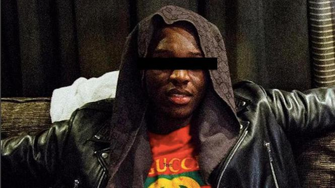

Amsterdamse faalrapper Eves Laurent bekent plofkraak met Audi

Een beetje een rapper heeft altijd een side hustle lopen. Voor Jeff A., beter bekend als Eves Laurent (foto links), was dit het opblazen van een geldautomaat. Helaas voor hem draaide de kraak uit op een fiasco en zit hij nu vast.
Tot voor kort was het leven van Eves Laurent a.k.a. Jeff A. (28) overzichtelijk: beetje grinden, beetje hosselen, beetje flashen met goud, dikke auto's, designerkleren en dure flessen. Kortom: precies hetzelfde doen als wat elke andere stereotype rapper doet. Alleen is Eves al sinds begin mei, in de woorden van Styles P., locked up. Dit op verdenking van een plofkraak in het Duitse Wiesbaden, waarbij een schamele 1.900 euro werd buitgemaakt. Bovendien reden de daders - Jeff en een 23-jarige andere man - tijdens hun vlucht op de snelweg hun gestolen Audi stuk. Er was geen politiewerk voor nodig om ze te arresteren, de kit hoefde alleen maar het oliespoor te volgen en de mannen een paar kilometer verderop aan te houden. Hopelijk is de beste man beter in rappen dan in plofkraken plegen.
Uiteraard krijgt hij veel steun, van zijn rapformatie De Fellas (#freeEvesLaurent), van zijn label High Paid Fellas (HPF), en van fans. Het zal hem echter niet veel helpen, aangezien hij volgens Het Parool inmiddels een bekentenis heeft afgelegd. Heeft de straat je dan niet geleerd dat je altijd zwijgt tegen de skotoe? Mocht Jeff wat langer achter de 101 barz verdwijnen, dan zal dat zijn reputatie geen kwaad doen. Sterker nog: in het rapcircuit is een strafblad net zo'n statussymbool als Gucci-riemen en Versace-nektasjes. Omdat we de beroerdste niet zijn, pluggen we nog even een zomersessie van Eves. En daaruit blijkt: hij kan inderdaad beter rappen dan plofkraken. Veel beter zelfs. Die flow is helemaal niet slecht. De komende tijd kan hij mooi zonder afleiding teksten gaan schrijven.
bron: https://www.autobahn.eu/10960/amsterdamse-faalrapper-eves-laurent-bekent-plofkraak-met-audi/.